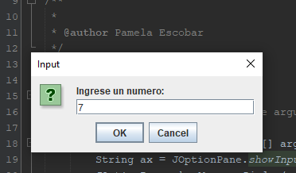
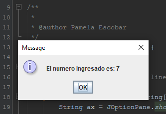
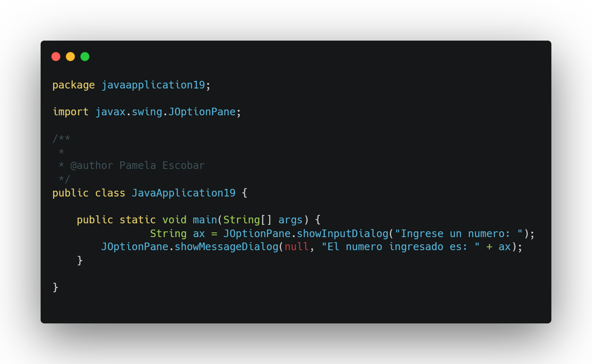
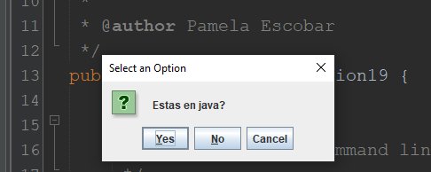
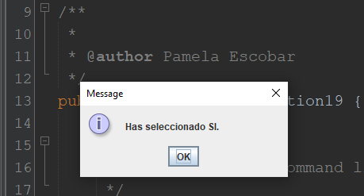
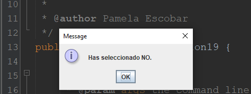

Definición:
Ventana que permite comunicación simple entre el usuario y el sistema informático.
Ventana que permite comunicación simple entre el usuario y el sistema informático.
Los cuadros de dialogo (JOptionPane) son «herramientas» muy útiles al momento de ingresar datos y mostrar información; digo útil ya que con estas no necesitamos crear objetos de tipo BufferedReader y «tirar» más código para poder usar correctamente los datos que se ingresan como lo expliqué brevemente cuando explique sobre como ingresar datos en Java por consola.
Para poder poder usar estos cuadros de dialogo hay que importar la librería necesaria para que esta se ejecute, la cual es:
import javax.swing.JOptionPane;
Entre los tipos de cuadros dialogo encontraremos: showConfirmDialog, showInputDialog, showMessageDialog y showOptionDialog. Los mas usados son los tres primeros. Ahora si, aprendamos a usar JoptionPane En Java.
Este cuadro de dialogo es ideal para mostrar información de cualquier tipo, este reemplaza el System.out.print(); La sintaxis es:
.png)
Este cuadro de dialogo es ideal para ingresar datos, hay que tener en cuenta que todo lo que se reciba se tomara como un String, pero esto no es problema para trabajar con otros tipos de datos, en tal caso es necesario convertir la cadena que se recibe en el tipo de dato que necesitemos (int, Float, double, etc). La sintaxis es las siguiente:
 – En la linea 1 cree una variable de tipo String la cual llamé «ax», en esta variable almaceno el dato que se ingresa con el showInputDialog, al igual que el showMessageDialog lo que va dentro del «…» es el mensaje que mostramos al usuario.
– En la linea 2 muestro el dato que recibí atravez de la variable ax. – Al ejecutarse la aplicación veremos lo siguiente:
Este cuadro de dialogo es de tipo entero, por lo tanto hay que crear una variable de tipo int para manejar las opciones que este cuadro de dialogo ofrece, las anteriores son si, no, y cancelar; la sintaxis es la siguiente:
  En la linea 1 se puede observar que cree una variable entera, el null que se antepone al mensaje es necesario, ya que este se toma cuando el usuario pulsa la tecla Esc o presiona Cancelar, el mensaje a mostrar se usa como en los anteriores cuadros de dialogo.
En las lineas 2 y 4 se usan condicionales para tomar las acciones respectivas de acuerdo a la opción que haya dado el usuario.
En las lineas 3 y 5 se muestran mensaje correspondientes a la respectiva opción que haya dado el usuario.
Los anteriores son los cuadros de dialogo mas usados, ya que con estos podemos realizar cosas básicas pero muchas veces necesarias para el buen desarrollo de una aplicación. Cabe aclarar que lo anterior no es lo único que se puede hacer.